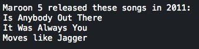

Taniya Prabhakar


Thoughts & Opinions
Stay Classy
Lookup Maroon 5 Songs By Year
03/07/2015
1 2 3 4 5 6 7 8 9 10 11 12 13 14 15 16 17 18 19 20 21 22 23 24 25 26 27 | class Maroon5 def initialize(year) @year = year @songs = { 2015 => ["To Be Determined"], 2014 => ["Animals", "Maps", "My Heart Is Open"], 2013 => ["No Valid Data Exists"], 2012 => ["Beautiful Goodbye”, ”Chilly Winter (Demo)”, “Daylight”, “Doin' Dirt”, “Fortune Teller", "Ladykiller", "Love Somebody", "Lucky Strike", "One More Night", "Payphone", "Sad", "Take What You Want", "The Man Who Never Lied", "Tickets" "Wasted Years", "Wipe Your Eyes"], 2011 => ["Is Anybody Out There", "It Was Always You", "Moves like Jagger"] } end def print_match @songs.each { |k,v| if k == @year puts "Maroon 5 released these songs in #{@year}: " puts @songs[k] else puts "The entered year is not within the past five years." end } end end adam = Maroon5.new(2011) adam.print_match |
Classes in Ruby, or quite frankly any language, are essential for easily maintainable code. By having multiple methods accessible to different objects of a class, you save the time and effort of recreating them and eliminate excessive repetition. To demonstrate how to implement a class and why they are useful, we will be creating a class with methods that will print the names of Maroon 5 songs that came out in a user-entered year (between 2011 and 2015).
In the code above, I have created a class called Maroon5. Within this class there is a method called initialize, which is used to sort of "boot up" our class with necessary variable assignments. Since we want to be able to pass in a year when creating a new Class object, we give it a parameter - year. This makes sure that when we call the method and boot up, we have a year to print out the list of songs for.
Instance variables are used to create instances of a class. With "year" being an instance, we are able to use it within different class methods. This ensures that when you initiate Maroon5, it has to have a year, and each instance of Maroon5 will have its own @year.
If you look under the code block, an "adam" is being given life. Here, adam is an object of the Maroon5 class, which is taking in the year "2011" as its argument. This means that adam will print out the songs that Maroon 5 released in 2011 when invoking the print_match method.
This is the result of calling the function:
